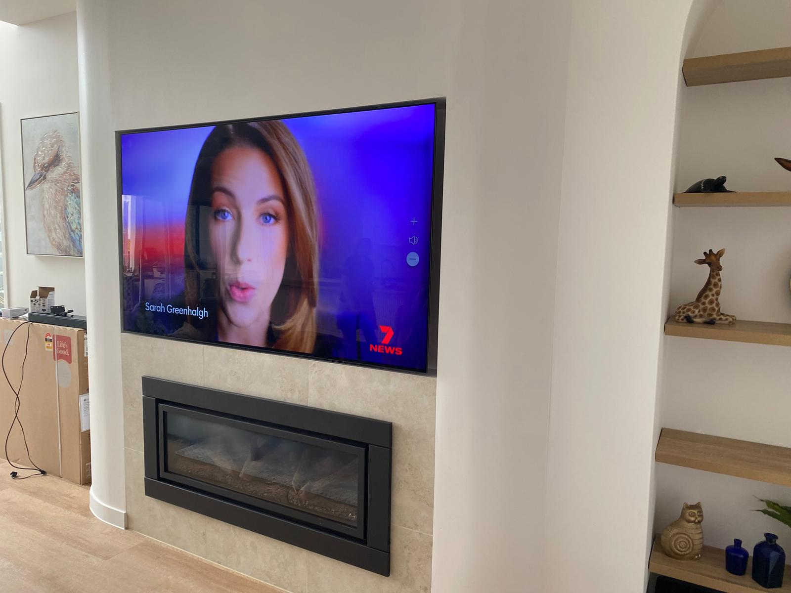

TV Mounting for Geebung Homes
Geebung's housing is predominantly post-war timber and fibro homes, many of which have been updated with modern interiors. The suburb also has a growing number of new builds and townhouse developments, particularly along Newman Road and Virginia Avenue. Internal walls in the older homes can vary from fibro sheeting to modern Gyprock, so a pre-installation wall assessment is essential.
What We Offer Geebung Residents
- The Bedroom Package ($275 inc GST) — Flat or tilt bracket supplied and installed for screens 32" to 55". Includes stud-located anchoring, laser levelling, and basic tuning and WiFi setup.
- The Living Room Package ($385 inc GST) — Heavy-duty bracket for screens 56" to 75". Includes two-technician safety lift for larger panels, secure Gyprock or stud-mounted installation, and full tuning.
- The Cinema Package ($550 inc GST) — Extra-heavy bracket with reinforced anchoring for screens 76" to 85". Two-technician installation with full picture calibration and audio setup.
Popular Add-Ons for Geebung Installations
- In-Wall Cable Concealment (+$99) — HDMI and power cables routed behind the plasterboard for a completely clean, floating look. Available for Gyprock cavity walls.
- Full-Motion Arm Upgrade (+$120) — Swap the standard tilt bracket for a full-motion arm that extends, swivels, and tilts. Perfect for corner mounting or multi-angle viewing rooms.
- Brick or Concrete Wall Mounting (+$55) — Masonry drilling and heavy-duty concrete anchors for solid wall surfaces.



Our Experience in Geebung
We've completed many first-time TV installations in Geebung, often for families upgrading from a TV unit to a wall-mounted setup. Our Bedroom package at $275 is extremely popular here, and many customers go on to book a second installation for their living room. Geebung's central location means we can usually offer morning or afternoon appointments on the same day.
Geebung Installation Tip
Older Geebung homes with fibro wall linings require special care during installation. We use low-vibration drilling techniques and reinforced backing plates to ensure a safe, secure mount without damaging the surrounding wall surface.
Why Geebung Residents Choose Brisbane TVs
When you book with Brisbane TVs, you're not getting a general handyman with a drill and a YouTube tutorial. You're getting a trained technology specialist who arrives with a fully stocked van, commercial-grade equipment, and the expertise to handle any wall type or screen size. Every installation is laser-levelled, stud-anchored where possible, and backed by our 5-year workmanship warranty.
We understand that your home is your most valuable asset, and we treat every Geebung installation with the care and professionalism it deserves. From the moment we arrive in boot covers with drop sheets, to the final vacuum of plaster dust before we leave, our zero-mess policy ensures your home stays spotless throughout the process.
Ready to Book Your Geebung Installation?
Tell us about your TV and wall type, and Thomas will text you a confirmed price and available time slot within the hour.
CHECK AVAILABILITY IN GEEBUNG